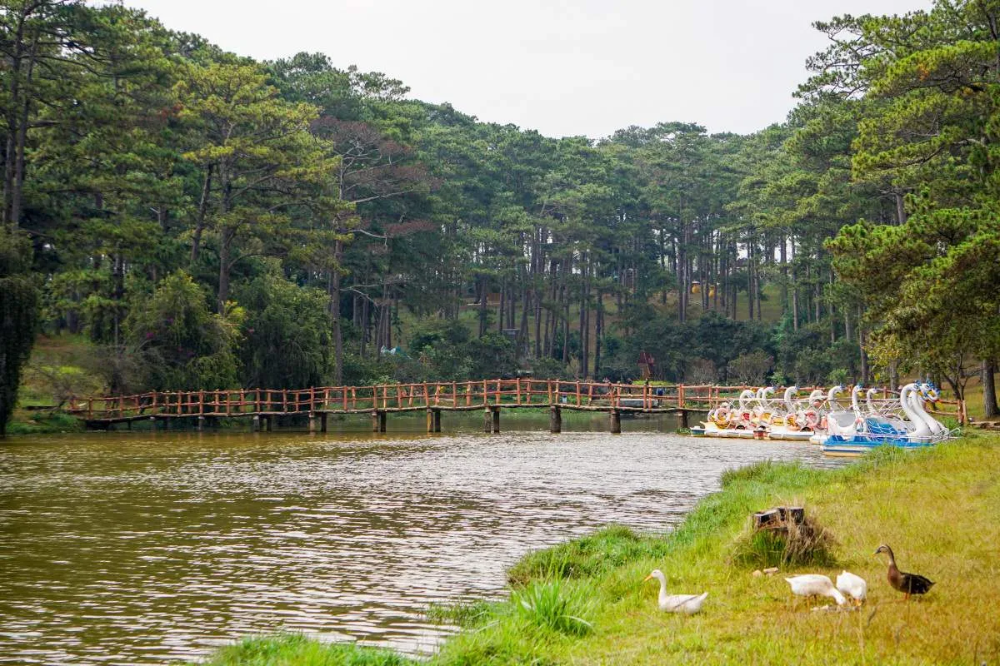
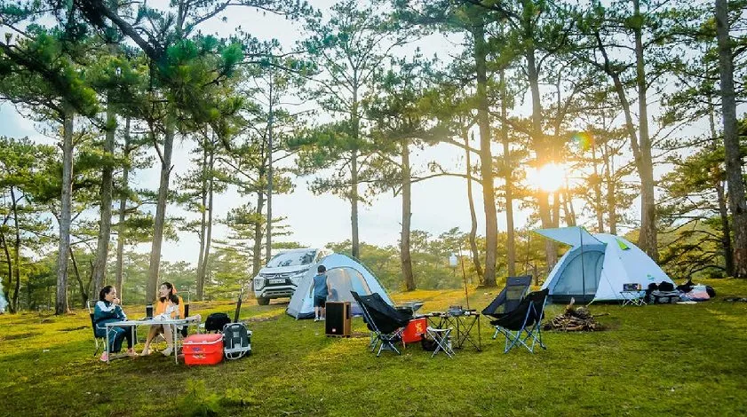
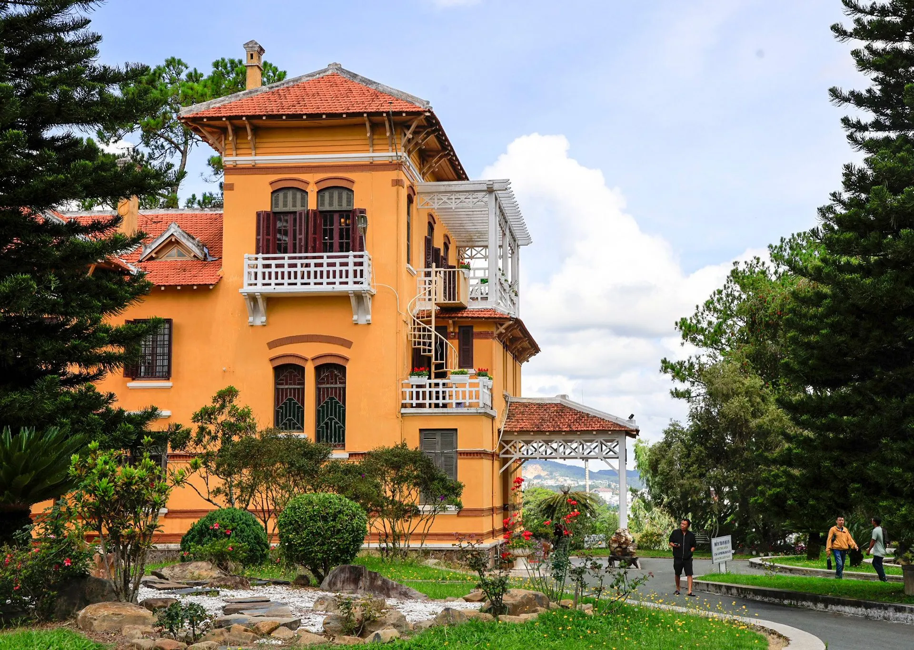
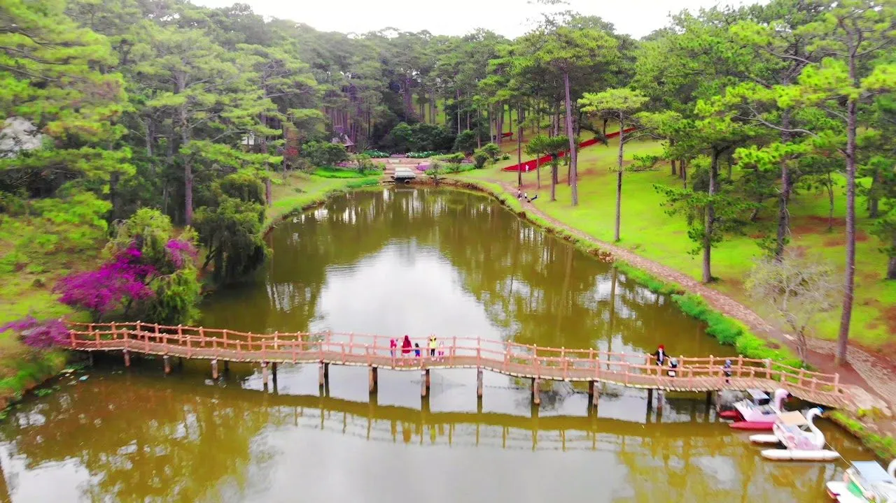

Khám phá Lake of Sighs Đà Lạt: Cảnh đẹp và interesting experience

Table of Contents
- 1. Lake of Sighs nằm ở đâu?
- 2. How to get there đến Lake of Sighs chi tiết
- 3. Giá vé Lake of Sighs mới nhất năm 2025
-
4. Trải nghiệm you shouldn't miss khi visit Lake of Sighs – Đà Lạt
- 4.1. Thưởng ngoạn khung cảnh thiên nhiên hữu tình, đậm chất thơ tại Lake of Sighs
- 4.2. Nghe kể về truyền thuyết tình yêu cảm động gắn liền với cái tên “Lake of Sighs”
- 4.3. Thăm pine hills Hai Mộ – Icon của tình yêu vĩnh cửu tại Lake of Sighs
- 4.4. Trải nghiệm hái dâu tại vườn Biofresh ở Lake of Sighs – hoạt động thú vị cho mọi lứa tuổi
- 4.5. “Sống ảo” cực chất tại flower garden cẩm tú cầu rực rỡ tại Lake of Sighs
- 4.6. Cưỡi ngựa stroll around hồ Than Thở – feel/experience Đà Lạt theo cách rất riêng
- 4.7. Đạp vịt thư giãn giữa khung cảnh nên thơ ở Lake of Sighs
- 4.8. Cắm trại qua đêm – lưu giữ ký ức đẹp bên hồ Than Thở
- 5. What to Eat khi visit/explore Lake of Sighs?
- 8. Khám phá xong hồ Than Thở, don't forget ghé Tiệm Nướng & Chill Xóm Lèo để “nạp năng lượng”
Lake of Sighs, với beauty tĩnh lặng và poetic, tựa như một bức tranh thủy mặc giữa chốn the highlands romantic. Đây là một trong những destination prominent tại Đà Lạt, attracts a large number of visitors visit mỗi năm.

Bên cạnh những địa danh quen thuộc như thác Cam Ly, pine hills Hai Mộ hay hồ Tuyền Lâm, the misty city còn có một viên ngọc xanh mang tên Lake of Sighs. Nơi đây gây impressive bởi khung cảnh hữu tình, khí hậu mát lành cùng atmosphere peaceful, ideal để nghỉ dưỡng và enjoy thiên nhiên. Những hoạt động thú vị tại hồ sẽ mang đến cho bạn nhiều kỷ niệm đáng nhớ trong hành trình discover Đà Lạt.
1. Lake of Sighs nằm ở đâu?
Lake of Sighs là một destination prominent trong hành trình du lịch Đà Lạt, tọa lạc trên đường Xuan Huong Lake, thuộc phường 12, thành phố Đà Lạt, tỉnh Lâm Đồng. With beauty peaceful và nên thơ, nơi đây attracts a large number of visitors visit mỗi năm.
Chỉ from downtown Da Lat khoảng 7km, hồ Than Thở rất dễ tiếp cận nhờ tuyến đường di chuyển convenient. Đây là một điểm dừng chân ideal để bạn kết hợp visit/explore, take photos và enjoy atmosphere trong lành giữa núi rừng the highlands.

Đà Lạt, với những cảnh sắc thiên nhiên poetic và khí hậu chilly, luôn là destination ideal cho những ai yêu thích sự peaceful và romantic. Giữa vô vàn location prominent tại the City of a Thousand Flowers, Ôm Secret Hill nổi lên như một “ngọn đồi bí mật” quyến rũ, nơi lưu giữ những khoảnh khắc peaceful và tràn ngập cảm xúc.
2. How to get there đến Lake of Sighs chi tiết
From the center Đà Lạt, cụ thể là khu vực Square Lâm Viên, you can dễ dàng di chuyển đến Lake of Sighs chỉ trong khoảng 10 minutes. Lộ trình suggestion như sau: bắt đầu từ đường Trần Quốc Toản, sau đó rẽ vào đường Yersin, tiếp tục đi theo tuyến Quang Trung – Xuan Huong Lake. Go straight theo lộ trình này, bạn sẽ nhanh chóng bắt gặp Lake of Sighs nằm bên pine forest xanh mát.
With quãng đường không quá xa và giao thông convenient, you can chọn di chuyển bằng motorbike để chủ động discover hoặc gọi taxi nếu muốn nhanh chóng và thoải mái. Đối với những ai yêu thích trải nghiệm, thuê motorbike là lựa chọn ideal để vừa đến hồ vừa có thể dừng lại take photos, chiêm ngưỡng beauty thiên nhiên ven đường.

3. Giá vé Lake of Sighs mới nhất năm 2025
Một trong những điều được nhiều visitors quan tâm khi visit Lake of Sighs là giá vé vào cổng và khung hours mở cửa. Below are thông tin cập nhật mới nhất giúp bạn dễ dàng chuẩn bị cho trip:
-
Giá vé visit/explore:
-
Người lớn: 20.000 VNĐ/lượt
-
Trẻ em: 10.000 VNĐ/lượt
-
-
Giờ hoạt động: 8:00 – 17:00 hằng ngày
With mức giá phải chăng, you can thoải mái enjoy khung cảnh thiên nhiên trong lành và tham gia nhiều hoạt động thú vị tại location nổi tiếng này.

4. Trải nghiệm you shouldn't miss khi visit Lake of Sighs – Đà Lạt
Not only là destination nổi tiếng nhờ beauty nên thơ, Lake of Sighs còn gắn liền với nhiều trải nghiệm đáng nhớ, làm say lòng biết bao visitors. Nếu có dịp dừng chân tại đây, don't miss những điều especially sau:
4.1. Thưởng ngoạn khung cảnh thiên nhiên hữu tình, đậm chất thơ tại Lake of Sighs
Lake of Sighs mang đến cho visitors cảm giác như lạc vào một bức tranh sơn thủy hữu tình – nơi mặt nước phẳng lặng soi bóng trời, pine forest xanh rì rì rào trong gió, và ambiance trong lành dịu mát quanh năm. Không gian nơi đây especially ideal để bạn tạm quên những xô bồ của phố thị, tìm lại sự tĩnh tại trong tâm hồn.
Khung cảnh quanh hồ mang dáng dấp hoang sơ, tranquil. Mỗi in the morning, màn sương mờ nhẹ phủ lên mặt hồ, tạo nên một khung cảnh huyền ảo, như chỉ có trong truyện cổ tích. Những ai yêu thiên nhiên, thích nhiếp ảnh hay đơn giản chỉ muốn enjoy beauty nguyên sơ của Đà Lạt chắc chắn sẽ mê mẩn nơi này ngay từ cái nhìn đầu tiên.

4.2. Nghe kể về truyền thuyết tình yêu cảm động gắn liền với cái tên “Lake of Sighs”
Bên cạnh beautiful scenery nên thơ, Lake of Sighs còn known for một câu chuyện tình cảm động khiến ai nghe cũng không khỏi chạnh lòng. Tương truyền rằng vào thời vua Quang Trung, có một đôi trai gái tên Hoàng Tùng và Mai Nương yêu nhau sâu đậm. Khi đất nước lâm nguy, Hoàng Tùng lên đường tòng quân với lời hẹn ước sẽ trở về bên nàng khi mùa xuân đến, lúc cành đào hé nụ.
Thế nhưng, khi cây đào vừa nở hoa báo hiệu mùa xuân trở lại, Mai Nương bất ngờ nhận tin chàng đã tử trận. Trong nỗi đau tuyệt vọng, nàng tìm đến lake nơi cả hai từng hẹn thề và gieo mình xuống đó. Trớ trêu thay, Hoàng Tùng vẫn còn sống, và đúng như lời hứa, chàng quay về tìm people yêu. Nhưng khi hay tin Mai Nương đã chết, chàng cũng chọn cách ra đi vĩnh viễn, để được mãi mãi bên people con gái mình thương.
Câu chuyện tình yêu thủy chung nhưng bi kịch ấy đã khiến people dân nơi đây đặt tên hồ là Lake of Sighs – như một cách tưởng niệm cho mối tình bất diệt của đôi trai gái năm xưa, và cũng để nhắc nhở thế hệ sau về giá trị của tình yêu chân thành.

4.3. Thăm pine hills Hai Mộ – Icon của tình yêu vĩnh cửu tại Lake of Sighs
Không thể không nhắc đến pine hills Hai Mộ – một location gần kề Lake of Sighs, cũng gắn liền với câu chuyện tình buồn ấy. Trên sườn đồi phủ kín thông xanh, hai ngôi mộ nằm song song nhau, được cho là nơi yên nghỉ của Hoàng Tùng và Mai Nương. Không gian nơi đây yên tĩnh, nhẹ nhàng, mang theo nét trầm buồn sâu lắng khiến ai đến cũng feel/experience được một nỗi niềm khó tả.
Pine Hills not only mang ý nghĩa lịch sử – văn hóa, but also là nơi ideal để visitors dạo chơi, enjoy the scenery hoặc chụp lại những bức ảnh kỷ niệm giữa khung cảnh romantic đặc trưng của Đà Lạt. Dù bạn đi cùng people yêu, bạn bè hay một mình, nơi đây vẫn mang đến một cảm giác rất riêng – vừa sâu lắng vừa poetic, đầy chất thi ca.

4.4. Trải nghiệm hái dâu tại vườn Biofresh ở Lake of Sighs – hoạt động thú vị cho mọi lứa tuổi
Nằm trong danh sách những strawberry farm nổi tiếng nhất Đà Lạt, Biofresh attracts a large number of visitors nhờ atmosphere xanh mát, clean và cách chăm sóc nông sản theo hướng hữu cơ. Khu vườn có diện tích lên đến 3 hecta, được quy hoạch gọn gàng, thoáng đãng với những luống dâu sai trĩu quả.
Tại đây, bạn sẽ có cơ hội tự tay hái những quả dâu đỏ mọng, enjoy ngay tại vườn với hương vị ngọt thanh, mọng nước và thơm mát. In addition, khung beautiful scenery như tranh ở Biofresh cũng là phông nền ideal để bạn “check-in Instagrammable” và lưu lại những tấm hình đậm chất Đà Lạt. With những ai yêu thích trải nghiệm nông nghiệp xanh và muốn tìm hiểu thêm về mô hình trồng trọt công nghệ cao, đây chắc chắn là điểm dừng chân you shouldn't miss.

4.5. “Sống ảo” cực chất tại flower garden cẩm tú cầu rực rỡ tại Lake of Sighs
Một trong những trải nghiệm không thể thiếu khi du lịch gần Lake of Sighs chính là visit flower garden cẩm tú cầu – loài hoa đặc trưng và đầy icon/symbol của Đà Lạt. Những đóa hoa cẩm tú cầu tròn xinh, nở thành từng cụm lớn với đủ sắc độ từ tím, hồng, xanh đến trắng tinh khôi sẽ khiến bạn không khỏi choáng ngợp và thích thú.
Cẩm tú cầu not only prominent bởi vẻ ngoài dịu dàng but also mang nhiều ý nghĩa especially về lòng biết ơn, sự chân thành và tình yêu bền vững. Therefore, đây cũng là location yêu thích của các cặp đôi và những ai mê take photos nghệ thuật. Don't forget sạc đầy pin điện thoại, chuẩn bị trang phục “chất” để có những bộ ảnh lung linh giữa atmosphere hoa rực rỡ nhé!

4.6. Cưỡi ngựa stroll around hồ Than Thở – feel/experience Đà Lạt theo cách rất riêng
Để feel/experience complete/perfect beauty trầm mặc, nên thơ của khu vực quanh Lake of Sighs, nhiều visitors lựa chọn cưỡi ngựa hoặc thuê xe ngựa stroll around hồ và các triền pine hills lộng gió. Chi phí thuê xe thường vào khoảng 150.000 VNĐ/xe, suitable cho nhóm từ 2–4 people.
Cảm giác ngồi trên xe ngựa, chầm chậm lướt qua những hàng thông già, mặt hồ yên ả và gió mát thoảng qua là một trải nghiệm rất “Đà Lạt” – vừa classic vừa romantic. Đây là lựa chọn wonderful cho những ai yêu thích ambiance nhẹ nhàng, thích enjoy the scenery một cách thư thái mà không phải walk nhiều.

4.7. Đạp vịt thư giãn giữa khung cảnh nên thơ ở Lake of Sighs
Một trong những hoạt động được giới trẻ especially yêu thích tại Lake of Sighs là đạp vịt dạo chơi trên mặt hồ. With hình dáng ngộ nghĩnh, những chiếc thuyền vịt not only giúp bạn dễ dàng di chuyển but also tạo điểm nhấn đáng yêu cho khung hình check-in của bạn.
Giữa làn nước trong xanh, you can vừa thong thả đạp thuyền, vừa enjoy làn gió mát, nhìn enjoy the scenery vật xung quanh phản chiếu dưới mặt hồ. Cảm giác “trôi” giữa thiên nhiên tĩnh lặng chắc chắn sẽ mang đến những giây minutes thư giãn wonderful và những bức ảnh kỷ niệm unique.

4.8. Cắm trại qua đêm – lưu giữ ký ức đẹp bên hồ Than Thở
With những ai yêu thích trải nghiệm gần gũi thiên nhiên, cắm trại qua đêm tại Lake of Sighs là một lựa chọn ideal để enjoy complete/perfect beauty hoang sơ, tĩnh lặng của nơi đây. Khi đêm buông xuống, cả atmosphere chìm trong sương mờ và ánh đèn leo lét từ những căn lều sẽ mang đến một cảm giác bình yên khó tả.
However, để trip an toàn và complete/perfect, you should liên hệ trước với ban quản lý tourist area, đồng thời chuẩn bị đầy đủ vật dụng cần thiết như lều, túi ngủ, food, beverages và dụng cụ giữ ấm. Cắm trại bên hồ, quây quần bên đống lửa, kể chuyện, đàn hát cùng bạn bè hay people thân chắc chắn sẽ là kỷ niệm khó quên trong hành trình discover Đà Lạt.

5. What to Eat khi visit/explore Lake of Sighs?
Sau khi dạo chơi quanh hồ, you can enjoy những món ngon trứ danh của Đà Lạt để nạp lại năng lượng. Tại khu vực quanh Lake of Sighs, có khá nhiều lựa chọn hấp dẫn cho các tín đồ cuisine:
-
Quán Lệ Dung – specialty dê núi
Nếu bạn yêu thích các món từ thịt dê thì Lệ Dung là lựa chọn perfect. Quán nằm ở số 5 Xuan Huong Lake, service từ 9:00 đến 22:00. Mỗi dishes có giá dao động từ 50.000 – 200.000 VNĐ, thích hợp cho những bữa ăn đậm chất núi rừng và ấm cúng. -
Quán Sông Hồng – thiên đường seafood
Dành cho các tín đồ seafood, quán Sông Hồng tại số 18 Phan Chu Trinh mang đến menu diverse từ tôm, mực, cá đến các món seafood tươi sống chế biến tại chỗ. Mở cửa từ 10:00 – 22:00, giá dao động từ 50.000 – 500.000 VNĐ/món.
In addition, đừng bỏ qua những dishes vặt “specialty” Đà Lạt như: bánh tráng nướng, bánh ướt lòng gà hay nem nướng – có thể dễ dàng tìm thấy tại các xe đẩy hoặc night market Đà Lạt.
6. Các location du lịch gần Lake of Sighs nên kết hợp visit/explore
Để trip thêm phần diverse, you should kết hợp visit một vài địa danh prominent gần Lake of Sighs. Những destination dưới đây chỉ cách hồ vài minutes đi xe, rất tiện lợi cho hành trình 1 ngày hoặc nửa ngày.
6.1. Bảo tàng Lâm Đồng – nơi lưu giữ lịch sử và văn hóa gần Lake of Sighs
-
Address: số 4 đường Hùng Vương, phường 10, TP. Đà Lạt
-
Ticket price: free cho children, 10.000 VNĐ/adults
Bảo tàng located on đến Lake of Sighs, convenient ghé qua. Tại đây, bạn sẽ được tìm hiểu về lịch sử, văn hóa và phong tục của các dân tộc sinh sống tại Lâm Đồng, thông qua những hiện vật, mô hình sống động.

6.2. Valley Tình Yêu – thiên đường romantic gần Lake of Sighs
-
Address: số 3–5–7 Mai Anh Đào, phường 8, TP. Đà Lạt
-
Ticket price: 125.000 VNĐ/people (children dưới 1m2 và people cao tuổi); 250.000 VNĐ/adults
Nằm cách Lake of Sighs không xa, Valley Tình Yêu là location ideal cho những ai yêu beautiful scenery romantic và các hoạt động ngoài trời như zipline, bắn súng sơn, đạp vịt… Tất cả đều được tích hợp trong giá vé, tha hồ vui chơi cả ngày!

6.3. Palace Bảo Đại – nơi ở của vị vua cuối cùng triều Nguyễn gần Lake of Sighs
-
Address: đường Trần Quang Diệu, phường 10, TP. Đà Lạt
-
Ticket price: 25.000 VNĐ/children; 50.000 VNĐ/adults
Palace 1 là công trình kiến trúc mang đậm phong cách hoàng gia Pháp. Nơi đây từng là chốn nghỉ dưỡng và làm việc của vua Bảo Đại. Hiện nay, dinh vẫn giữ được nét kiến trúc nguyên bản, thu hút nhiều visitors đến visit/explore và tìm hiểu.

6.4. Railway Station Đà Lạt – điểm check-in “ancient” gần Lake of Sighs
-
Address: số 1, phường 10, TP. Đà Lạt
-
Ticket price: 50.000 VNĐ/people
Da Lat Railway Station là nhà ga cổ nhất Đông Dương còn lại, prominent với thiết kế mái ngói hình răng cưa unique. You can trải nghiệm đi tàu du lịch từ ga đến Trại Mát, vừa enjoy the scenery vừa enjoy cảm giác như trở về thời xưa.

7. Kinh nghiệm cần biết khi discover Lake of Sighs – Đà Lạt
Để hành trình visit/explore Lake of Sighs được complete/perfect và suôn sẻ, bạn don't forget chuẩn bị thật kỹ những thông tin hữu ích sau nhé!
7.1. Du lịch Lake of Sighs vào thời điểm nào đẹp nhất?
Khoảng thời gian từ tháng 12 đến tháng 4 năm sau chính là “mùa vàng” để đến với Lake of Sighs. Đây là dry season của Đà Lạt, khi weather nắng nhẹ, ít mưa, ambiance trong lành, chilly – rất suitable cho các hoạt động dã ngoại, take photos hay cắm trại. Especially, khung cảnh xung quanh hồ thời điểm này tràn ngập sắc hoa, cây cối tươi tốt, tạo nên bức tranh thiên nhiên vô cùng poetic.
✅ Tip nhỏ: Nếu bạn thích khung cảnh romantic, hãy đến vào early morning để enjoy sương mờ phủ mặt hồ – một specialty chỉ có ở vùng đất the highlands.
7.2. Nên chuẩn bị gì khi đến Lake of Sighs?
Below are một số món đồ you should mang theo khi đi chơi tại hồ:
-
Trang phục thoải mái: Ưu tiên các loại quần áo gọn nhẹ, thấm hút mồ hôi tốt.
-
Giày thể thao hoặc giày đế mềm: Sẽ giúp bạn di chuyển dễ dàng hơn khi stroll around hồ hay leo dốc nhẹ.
-
Máy ảnh hoặc điện thoại sạc đầy pin: Vì nơi đây có rất nhiều góc Instagrammable nên bạn chắc chắn sẽ không muốn bỏ lỡ.
-
Đồ ăn nhẹ, beverages: Khu vực quanh hồ chưa có nhiều service dining, nên hãy chuẩn bị một chút đồ dùng cần thiết nếu bạn định ở lại lâu.
-
Kem chống nắng, áo khoác nhẹ: Dù khí hậu cool and refreshing, nhưng nắng the highlands vẫn có thể khiến da bạn sạm đi nếu không bảo vệ tốt.
7.3. Một vài note quan trọng để trip visit/explore Lake of Sighs thêm complete/perfect
-
Chủ động trong việc dining, rest/relax: Gần Lake of Sighs không có nhiều nhà hàng, restaurant hay hotel lớn. Nếu bạn có kế hoạch picnic, nghỉ lại hoặc tham gia hoạt động ngoài trời, hãy chuẩn bị lều trại và đồ dùng cá nhân từ trước.
-
Dịch vụ giải trí tính phí riêng: Một số trò chơi hoặc service tại khu vực hồ có thể phát sinh chi phí. Therefore, nên hỏi kỹ giá vé trước khi sử dụng.
-
Theo dõi weather trước khi đi: Tránh những ngày mưa để đảm bảo trip không bị gián đoạn và nguy hiểm khi đường trơn trượt.
-
Giữ gìn vệ sinh và cảnh quan: Không xả rác bừa bãi và tuân thủ nội quy của tourist area là cách bạn giúp bảo vệ môi trường nơi đây.
-
Tránh đến hồ vào in the evening nếu không có kế hoạch nghỉ lại, vì khu vực xung quanh khá vắng, ít đèn và service.

8. Khám phá xong hồ Than Thở, don't forget ghé Tiệm Nướng & Chill Xóm Lèo để “nạp năng lượng”
Sau một ngày rong ruổi discover beauty trầm mặc của hồ Than Thở và các location lân cận, sẽ thật wonderful nếu bạn dành thời gian ghé qua Tiệm Nướng & Chill Xóm Lèo – destination cuisine đầy hấp dẫn giữa lòng Đà Lạt.

🍽️ Không gian gần gũi, chill đúng điệu Đà Lạt
Nằm tại địa chỉ 113 Huỳnh Tấn Phát, Phường 11, quán prominent với thiết kế mộc mạc, ấm cúng nhưng vẫn phảng phất chất “bụi chill” rất riêng của phố núi. Tại đây, you can vừa enjoy món ngon vừa thả hồn theo cảnh sắc Đà Lạt mờ sương, peaceful.
🍡 Thực đơn diverse – chuẩn vị nướng Đà Lạt
Từ các grilled dishes thơm nức mũi đến các món nhắm đậm đà, phong cách chế biến unique, Tiệm Nướng & Chill Xóm Lèo luôn biết cách chiều lòng cả những vị khách khó tính nhất. Đây là nơi ideal để tụ họp cùng bạn bè, “lai rai” giữa tiết trời chilly đặc trưng của the highlands.
🤝 Dịch vụ friendly – trải nghiệm dễ chịu
Đội ngũ staff ở đây được đánh giá cao bởi sự enthusiastic, chu đáo. Từ lúc gọi món đến khi rời quán, bạn sẽ luôn feel/experience được sự đón tiếp nồng hậu và professional.
📌 Book a Table: Tại Đây
📌 Google Map: Xem trên bản đồ
📞 Hotline: 076.45.27.336 – 08.99.42.84.34 – 0902.91.22.40
👉 Gợi ý nhỏ: Hãy đến sớm để chọn được chỗ ngồi có beautiful view và không phải chờ đợi lâu, nhất là vào dịp weekend hoặc in the evening nhé!
Lake of Sighs not only gây impressive bởi beauty nên thơ, romantic giữa pine forest xanh mát but also mang đến cho visitors nhiều interesting experience như đạp vịt, cắm trại, cưỡi ngựa, check-in tại flower garden cẩm tú cầu hay hái dâu tại vườn Biofresh. Sau một ngày discover beautiful scenery và enjoy ambiance trong lành nơi đây, bạn don't forget ghé Tiệm Nướng & Chill Xóm Lèo tại 113 Huỳnh Tấn Phát để enjoy các grilled dishes đậm vị trong atmosphere ấm cúng, thư giãn – một cách wonderful để kết thúc hành trình discover đầy cảm xúc tại Đà Lạt.